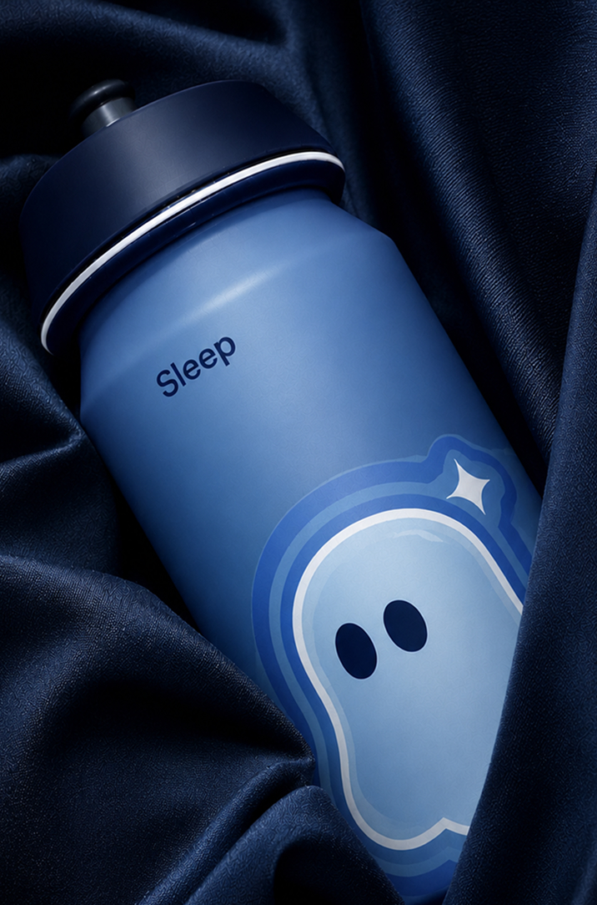
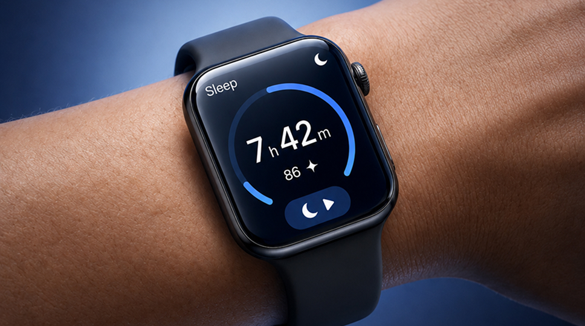
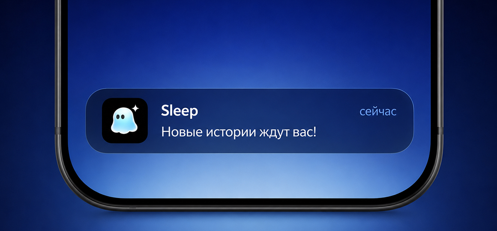
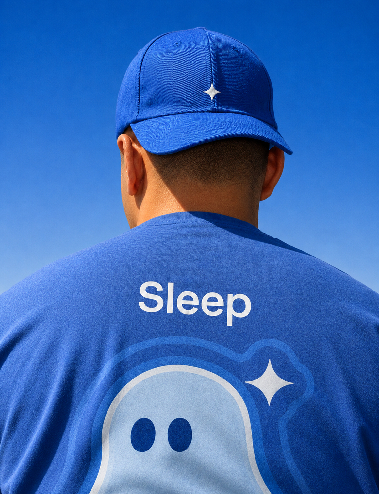

Перегрузка
Рабочие и учебные задачи продолжают прокручиваться после окончания дня.
Сервис историй, музыки и звуков
Истории, музыка и звуки для спокойного завершения дня
В основе задачи — умственная перегрузка, сбитый режим, долгое укладывание детей и привычка включать экран перед сном. Исследование помогло сузить фокус до людей с насыщенной жизнью, которым трудно переключиться вечером.
Рабочие и учебные задачи продолжают прокручиваться после окончания дня.
Люди уже используют голос, музыку, истории и шумы как часть вечернего ритуала.
Нужен доступный формат, который легко включить без долгой подготовки.
До проектирования нужно было выяснить, в какой ситуации человеку трудно заснуть, что он уже делает и какое место новый сервис может занять в привычном вечере. Поэтому исследование сосредоточено на реальном опыте, а не только на реакции на идею Sleep.
Исследование включало гайд вопросов, анализ ответов и сопоставление с исходными гипотезами. Вопросы охватывали распорядок дня, стресс, последний сложный вечер, привычки и уже испробованные способы.
Ответы помогают уточнить проблему и требования к сценарию. Они не измеряют влияние Sleep на сон: продукт в этом исследовании ещё не сравнивали с альтернативами.
«Расскажите о своём типичном дне. Как вы его проводите?»
«Есть ли у вас какие-то постоянные ритуалы перед сном?»
«Когда вы долго не можете заснуть, о чём вы думаете или что чувствуете?»
«Когда в последний раз не могли уснуть? Что вы тогда делали?»
«Какие методы, приложения или устройства вы уже пробовали, чтобы улучшить свой сон?»
Предполагали, что ключевой барьер — тревожные мысли и стресс. В выводах исследования выделены прокручивание задач и эмоциональное напряжение.
«…из-за моих мыслей, из-за того, что они крутятся и вообще невозможно с ними уснуть».
Сместить ценность к переключению внимания и понятному вечернему действию.
Участники упоминают голос, музыку, сказки и монотонные звуки. Sleep может встроиться в существующее поведение, вместо того чтобы требовать совершенно новой привычки.
Участники упоминали аудиокниги и музыку как доступный способ переключиться.
Сделать аудио основным входом, дать простой выбор истории или звука и заметный переход к прослушиванию. Короткая длительность 5–15 минут — решение концепции, которое ещё нужно проверять.
Исходно предполагали, что люди почти не знают альтернатив лекарствам. Ответы показывают знакомство с разными способами, но без устойчивого и последовательного ритуала.
Нужно помочь начать и повторять простое действие, а не только рассказывать о существовании техник.
Сократить усилия до первого запуска контента, сделать выбор понятным и собирать обратную связь о том, что человек действительно использует.
Работающие взрослые с высокой нагрузкой.
Студенты со сбитым режимом и учебным стрессом.
Часть младших респондентов работает и учится, обеспечивает себя и испытывает похожую перегрузку. В исследовании это стало основанием объединить близкие задачи.
Взрослые с насыщенной жизнью, которым вечером трудно прекратить прокручивать задачи и переключиться.
Когда мысли мешают расслабиться вечером, хочется быстро переключиться и снизить внутренний шум.
Начинать с ситуации и цели пользователя, а не только с возраста: что он хочет сделать сейчас, сколько времени готов выделить и какой формат предпочитает. Это связывает обновлённую аудиторию с подбором контента.
Концепция предлагает аудио по 5–15 минут, подбор под контекст и форматы для разных сценариев. Основной акцент — простой способ начать вечерний ритуал.
Низкий порог начала и понятная длительность прослушивания.
Идея персонализации учитывает возраст, настроение, длительность и ситуацию.
В исследовании сравнили Endel, Calm и Meditopia, а также привычные альтернативы: YouTube, аудиосервисы и помощники.
Библиотека историй, музыки и звуков; понятный плеер и короткий путь к прослушиванию.
Простая навигация, подборки под цель и видимая длительность контента. Проверка: может ли человек без объяснений найти и включить подходящий материал?
Выбор по ситуации и задаче, а не только по возрасту. Проверка: понимает ли человек, какая подборка подходит ему сейчас?
Низкий порог повторного запуска. Проверка: возвращается ли человек и использует ли контент повторно?
Минимализм, мягкие формы и спокойные голубые акценты. Вместо декоративной сложности — крупные изображения, простая навигация и пространство вокруг контента.
Мягкий персонаж, голубое свечение и пластичные формы переходят из цифрового интерфейса в фирменные носители. Мокапы показывают, как визуальная система работает в разных масштабах.





Лендинг и контентные каналы запущены. Результаты привлечения показали, что ценность и мотивация к следующему действию требуют доработки.
Цель запуска — 50
Цель запуска — 5
Цель запуска — 5
Цель запуска — 5
В этом тесте VK дал подписчиков, Telegram — нет. Нужны отдельные сообщения и креативы под канал.
В выводах проекта предложены понятная выгода и дополнительный повод оставить контакт.
Гипотеза о преимуществе ключевых фраз над интересами в презентации не подтверждена.
Следующий этап — уточнить предложение и проверить, как люди выбирают контент и возвращаются к нему.
Показать пример аудио на первом экране и объяснить, что пользователь получит после заполнения формы.
Проверить выбор и запуск подходящего материала: понятность навигации, голос, длительность и содержание.
Отслеживать возвращения и выяснять, что помогает сделать прослушивание частью вечернего ритуала.